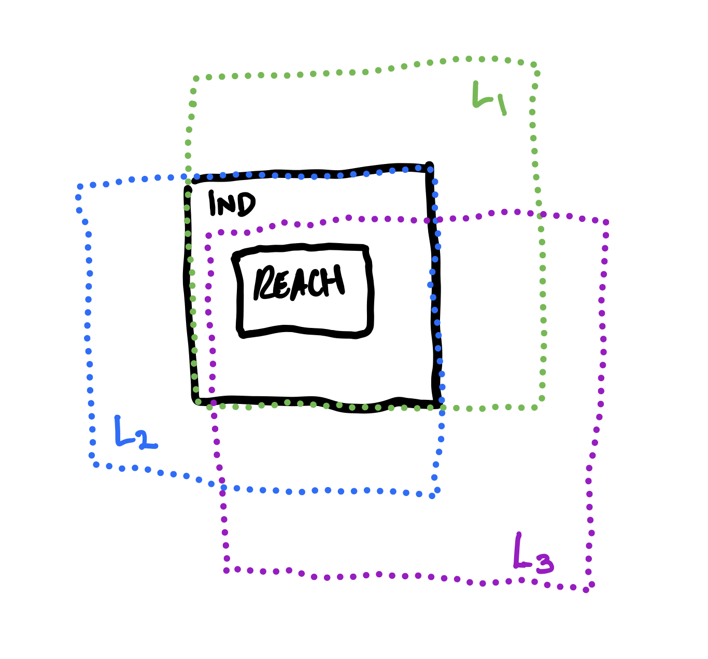

For the safety verification of transition systems, we typically must perform some kind of abstraction. For finite transition systems, verification is theoretically decidable, but practically it suffers from the state space explosion problem, and so exhaustive verification may be hard (e.g. exponential) in general. So, for verifying any systems of non-trivial size, abstraction is typically necessary. Finding an inductive invariant to prove safety is, essentially, about finding a suitable abstraction that overapproximates the set of reachable system states. Furthermore, we presumably want this abstraction to be “concise" i.e. it doesn’t scale in proportion to the size of the transition system (e.g. the number of states).
In general, in order to discover a “concise" inductive invariant we must work over some abstraction domain. Given a state space \(S\), we can define an abstraction domain \(D \subseteq 2^S\) as simply a set of subsets of \(S\). For example, given the state space defined by a single real valued variable \(x \in \mathbb{R}\), a possible abstraction domain is \[\begin{aligned} D_1 = \{x > 2, x < - 2\}\end{aligned}\] where each element of \(D_1\) is a subset of \(\mathbb{R}\), defined as a symbolic predicate over \(x\).
One way to define an abstraction domain for a state space \(S\) is to explicitly define the set \(D \subseteq 2^S\). Alternatively we can provide a set of atomic predicates and rules for for how these predicates can be combined to form additional predicates. Our abstraction domain is then defined as the space of all possible composite predicates that can be formed as combinations of atomic predicates, perhaps up to some bounded size. We can call this the grammar-based approach.
For example, for a state space \(S\) we can define a grammar \(G\) as a pair \((P,O)\) where \(P \subseteq 2^S\) is a set of predicates on \(S\), and \(O\) is a set of operators for combining elements of \(P\) to form new predicates on \(S\). These operators may be unary, binary, etc. For example, we may have a grammar \(G_1 = (\{x>2, x < 3\}, \{\neg, \vee\})\). We can refer to the abstraction domain defined by a grammar \(G\) as \(\mathcal{D}(G)\).
For finite state systems with a state space \(S\), we can also always work over an abstraction domain that consists of all predicates that contain a single state \(s \in S\). That is, the abstraction domain \(D_{\bot} = \{\{s\} \mid s \in S\}\), which we can view as “minimally abstract” (i.e. predicates don’t generalize across multiple states).
Now, given a particular abstraction domain \(D\), is it possible to learn an inductive invariant? If we have a transition system with a set of reachable states \(Reach\) and an inductive invariant \(Ind\) that is a strict superset of \(Reach\), one approach to searching for an inductive invariant is to define as our abstraction domain a set of invariants of this transition system. These invariants themselves could be defined in terms of some grammar, via atomic predicates and boolean connectives, but overall we just care about the set of invariants we can work with. If we search for an inductive invariant by picking new invariants one at a time, are we guaranteed to converge to an inductive invariant if one exists?
Consider the simple case below, where there are two inductive invariants (\(Ind\) and \(Reach\)) that exist, and \(Ind\) is expressible as a conjunctino of invariants in our abstraction domain.

There are 3 invariants in our domain, \(L_1,L_2,L_3\). If we select invariants in some order, are we guaranteed to converge to an inductive invariant? If we select \(L_1\) and then \(L_2\), then we will converge to \(Ind\). But, if we select \(L_1\) and then \(L_3\), we will end up with a resulting predicate \(L_1 \wedge L_3\) that is stronger than \(Ind\), and we end up stuck, since there are no inductive ivnariants stronger than \(Ind\) that are expressible in our abstraction domain. So, if we follow a strategy of strict refinement (always combining via conjunction), then we are inevitably stuck in this case. We could potentially undo a past choice, however, and try a different invariant selection strategy, in the style of standard backtracking search. But, a question is how to detect when we end up in this "dead end" refinement scenario.
If an inductive invariant exists that is representable in a given abstraction domain, will counterexample guided invariant search always find it?
We can say that our abstraction domain consists of the set of all invariants expressible by some given grammar. Then, we want to ask whether by selecting invariants in some manner, is it always possible we will learn
If you start off with a fixed abstraction domain, is there a way to dynamically adjust the domain if you realize that it cannot express the concepts (e.g. invariants) you want to express?